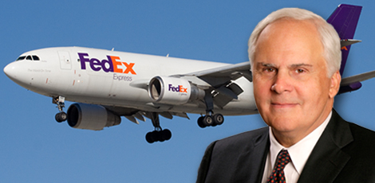

Fred Smith

Ông của Fred nguyên là đội trưởng đội chèo thuyền trên sông Mississippi. Cha của ông là người sáng lập một chuỗi nhà hàng và một công ty vận tải bằng xe đò – sau này trở thành một phần cốt yếu của hệ thống Công ty vận tải Greyhound Lines.
Vì vậy, có lẽ không có gì đáng ngạc nhiên khi Fred Smith, người sáng lập ra Hãng Federal Express tham gia vào lĩnh vực vận tải. Smith có bằng phi công khi mới 15 tuổi và đã từng lái máy bay rải chất hóa học hỗ trợ nông nghiệp. Là người có tham vọng và đam mê từ trong huyết quản, ông đã gây dựng thành công một công ty vận tải quốc tế khổng lồ từ hai bàn tay trắng. Đó cũng chính là thành quả của quá trình kết nối rất nhiều sự kiện xảy ra trong cuộc đời ông.
Giống như rất nhiều doanh chủ khác, Fred sớm phải hứng chịu nhiều bi kịch trong cuộc đời. Smith mất cha khi mới bốn tuổi. Ông được mẹ và các bác nuôi dưỡng. Bốn năm sau, ông mắc một căn bệnh hiếm gặp có tên y khoa là Legg-Calvé-Perthes (bệnh dẹt chỏm xương đùi) và phải dùng nạng trong hai năm.
Với sự thúc giục của mẹ, ông theo học tại Đại học Yale từ mùa thu năm 1962. Những trải nghiệm tại ngôi trường này đã thay đổi toàn bộ cuộc đời ông. Smith, chàng sinh viên treo lá cờ của Liên minh miền Nam thời Nội chiến Mỹ trên tường trong phòng ký túc xá, đã tích cực tham gia các hoạt động ở trường như câu lạc bộ đá bóng, câu lạc bộ Skull and Bones dành riêng cho một bộ phận học sinh, chỉnh nhạc cho đài phát thanh của khu ký túc xá và tham gia cả chương trình đào tạo thủ lĩnh sinh viên của Lực lượng dự bị Thủy quân lục chiến Mỹ.
Mặc dù Smith sau này đã nhận định bài luận môn kinh tế học của ông ở năm thứ ba có nhiều yếu tố hư cấu hơn là thực tế, nhưng chính nó đã gieo mầm ý tưởng cho Federal Express sau này. Bài nghiên cứu chưa đến 15 trang đã thể hiện niềm tin của Smith rằng các lĩnh vực trong đời sống đều sẽ được tự động hóa nhờ các tiến bộ quan trọng của công nghệ.
Năm 1966, khi Smith tốt nghiệp Đại học Yale, con đường trở thành doanh chủ của ông vẫn chưa bắt đầu. Thay vào đó, Smith ghi danh gia nhập lực lượng Thủy quân lục chiến. Cha và ba người bác của ông đã phục vụ trong quân đội và bản thân Smith đã được huấn luyện trong các khóa mùa hè của Lực lượng dự bị Thủy quân lục chiến. Từ năm 1967 đến hết năm 1969, ông đã phục vụ trong hai chuyến hành quân sang Việt Nam, lần đầu với tư cách trung đội trưởng đội súng trường và lần thứ hai là đại đội trưởng và người điều hành máy bay yểm trợ. Một lần, ông đã bị trúng đạn sượt qua sợi dây mũ cối và may mắn chỉ phải chịu một vết xước. Với chiến tích đó, ông đã được trao Huân chương Trái tim tím (loại huân chương dành cho những người lính bị thương khi tham chiến ở nước ngoài). Cho tới khi giải ngũ, Smith đã thực hiện hơn 200 nhiệm vụ bay trong thời gian chiến tranh leo thang ác liệt nhất.
Đấy là một trải nghiệm sâu sắc mang tính nền tảng. Smith có cơ hội được quan sát rất kỹ khối lượng công việc hậu cần khổng lồ của quân đội, việc huy động có hiệu quả hơn nửa triệu quân và hàng triệu tấn hàng hóa. Thứ hai, sự kỷ luật, các chương trình huấn luyện và kinh nghiệm chỉ huy với tư cách là một Đại úy Thủy quân lục chiến đã theo ông suốt cả cuộc đời. “Khi người ta hỏi tôi những nguyên tắc nào đã chỉ dẫn cho tôi kể từ khi tôi bắt đầu gây dựng Tập đoàn FedEx nhiều năm trước, câu trả lời của tôi luôn khiến họ sững sờ: đó là những nguyên tắc lãnh đạo mà tôi đã học được trong Lực lượng Thủy quân lục chiến Mỹ trong thời gian thực hiện nghĩa vụ của tôi tại Việt Nam.”
Khi Smith trở về nhà, ban đầu ông mua cổ phiếu nắm quyền kiểm soát của một công ty chuyên sửa chữa máy bay Ark Aviation Sales. Một năm sau, vào tháng Sáu năm 1971, Smith sáng lập Federal Express từ bốn triệu đô-la tiền thừa kế. Phải mất gần hai năm, FedEx mới hoạt động thực sự với 14 máy bay nhỏ, vận chuyển 186 gói hàng hóa tới 25 thành phố của nước Mỹ vào ngày 17 tháng Tư năm 1973. Những ngày đầu tiên vô cùng khó khăn: FedEx lỗ 27 triệu đô-la trong hai năm đầu tiên và đã đứng bên bờ vực phá sản.
Nhưng Smith đã thương lượng thành công về các khoản vay tại ngân hàng và duy trì được công ty. Năm 1978, FedEx trở thành công ty đại chúng. Từ một công ty bé nhỏ với một vài chiếc máy bay, FedEx đã trở thành một trong những câu chuyện khởi nghiệp thành công nhất mọi thời đại. Smith đã xây dựng một công ty vận tải toàn cầu với lợi nhuận hơn 38 triệu đô-la/năm, tuyển dụng gần 300 nghìn nhân viên và chuyển hàng triệu đơn hàng mỗi ngày tại 220 quốc gia.
Fred, nhiều ý tưởng trong bài luận của ông tại Đại học Yale đã tạo ra thành công của FedEx ngày hôm nay. Mọi người cho rằng từ khi còn là một chàng sinh viên năm ba, ông đã tạo ra nền tảng cho FedEx trong lớp học kinh tế của ông. Nhưng tôi thấy những kinh nghiệm của ông trong Lực lượng Thủy quân lục chiến mới là điều quan trọng hơn cả. Nếu ông thành lập công ty ngay sau khi tốt nghiệp đại học, liệu công ty có thành công như vậy không?
Vì một vài nguyên do, câu trả lời sẽ là không. Nhưng trước tiên, tôi phải nói rằng câu chuyện về bài luận kết thúc năm ba có tính chất hơi hư cấu, giống như rất nhiều những câu chuyện khác trong cuộc sống này. Bài luận mà tôi viết hoàn toàn không nói về FedEx mà nó nói về một xã hội tự động hóa và hệ thống hậu cần phải thay đổi hoàn toàn như thế nào để hỗ trợ thế giới.
Vào khoảng năm 1965 hay 1966 tại New Haven, bang Connecticut, tôi làm công việc lái những chuyến bay chở hàng và một trong những việc chúng tôi làm là thu gom các bộ phận quan trọng từ IBM, Xerox, Burroughs hay Sperry UNIVAC và chuyển chúng tới những địa điểm lắp đặt máy tính. Tôi nhận ra khi mọi thứ được tự động hóa, hiệu năng của các ngành kinh doanh sản xuất sẽ phụ thuộc vào việc có được nguồn cung bổ sung các phần và chi tiết một cách nhanh nhất để máy móc có thể chạy tốt. Vấn đề là hệ thống vận tải lúc đó phát triển không tương xứng với quá trình tự động hóa.
Thời đó, hệ thống vận chuyển hoạt động dựa theo nhu cầu của bên cung. Hãy nghĩ đến một sân chứa gỗ: anh chặt cây, xẻ chúng thành những miếng có kích thước 2x4, 6x8 và đặt trong sân chứa gỗ; sau đó thợ xây sẽ đến mang gỗ đi xây nhà. Hoặc nghĩ đến những cửa hàng tạp hóa phụ thuộc vào các trung tâm phân phối chất đầy sốt cà chua Heinz, mù tạt và bột ngũ cốc. Các sản phẩm này được chuyển từ kho đến các cửa hàng dựa trên cơ sở mặt hàng nào bán chạy và mặt hàng nào không.
Về bản chất, khách hàng phải từ bỏ khả năng bù đắp cho sự thiếu đa dạng hay thiếu hụt về trang thiết bị vì tất cả đã được tự động hóa. Ví dụ, Ngân hàng Chase Manhattan nằm ngay trên cùng con phố với Công ty IBM, nơi IBM đang sản xuất chiếc máy tính 360. Vì vậy, IBM có thể đảm bảo toàn bộ máy tính của ngân hàng này có thể liên tục làm việc. Nhưng khi IBM chào bán máy tính cho Ngân hàng San Angelo ở Texas, mọi chuyện lại khác. Tuy nhiên, IBM vẫn yêu cầu Ngân hàng San Angelo sa thải toàn bộ giao dịch viên bộ phận ghi nợ và tín dụng. Thay vào đó, ngân hàng sẽ sử dụng máy tính 360 của IBM. Bằng cách này, công việc sẽ được thực hiện hiệu quả hơn và chính xác hơn hệ thống thủ công mà nó thay thế. Tuy nhiên, cả hãng sản xuất và các khách hàng tiềm năng đều phải phụ thuộc vào một chuỗi cung ứng hoàn toàn khác biệt. IBM có thể chắc chắn về việc họ cần những phần và chi tiết nào trong một hệ thống đã được cài đặt sẵn. Nhưng họ không thể nói với anh phần nào cần chi tiết cụ thể nào. Vì vậy, ngay cả với một tập đoàn hùng mạnh như IBM, họ cũng không thể theo dõi tất cả những bộ phận và những chi tiết họ cần để các hệ thống máy tính của họ vận hành tốt.
Chuyện tương tự cũng xảy ra với các hãng như Boeing, McDonnell Douglas và Lockheed. Họ đã tự động hóa buồng lái trong máy bay và toàn bộ sân bay. Tất cả những chuyện này bắt đầu và phát triển rất nhanh từ khoảng giữa thập niên 1960. Bài luận văn của tôi đã nói về thực tế này.
Tôi nghĩ rằng kinh nghiệm ông có được ở chiến trường Việt Nam đã giúp khẳng định tất cả những điều trên?
Đúng. Tôi đã được quan sát cách một hệ thống hậu cần khổng lồ vận hành dựa trên yếu tố cung. Lực lượng Hải quân vận chuyển thực phẩm, vũ khí và những chiếc xe tải cỡ lớn trong những con tàu khổng lồ và đưa chúng ra tiền tuyến. Nhưng rắc rối sẽ phát sinh khi xuất hiện những trang bị công nghệ cao. Bạn cùng phòng của tôi từ thời đại học là phi công lái máy bay F-4J. Anh ấy luôn cảm thấy tội lỗi vì F-4J là vũ khí chiến tranh cực kỳ tinh vi và đúng ra không nên được giao cho Thủy quân lục chiến, đơn giản vì họ không thể giữ cho chúng hoạt động tốt được. Đó là một ví dụ kinh điển cho hiện tượng tôi đang nói tới. Vấn đề nằm ở sự khác biệt giữa thực phẩm, thuốc men và súng đạn cũng như các thiết bị điện tử tinh vi. Tôi tham gia Thủy quân lục chiến, rồi trở về cuộc sống đời thường và nhớ lại hiện tượng này. Trong thời gian sáu năm trong quân đội, xã hội đã phát triển vượt bậc trong lĩnh vực xây dựng hạ tầng công nghệ cao.
Tôi nhớ lại vấn đề này, đồng thời cũng bắt đầu nghiên cứu hệ thống của Cục Dự trữ Liên bang Mỹ. Lý do vì nó chính là mô hình thu nhỏ của nền thương mại Mỹ. Thời đó, có rất ít giao dịch ngân hàng được thực hiện qua đường dây điện tín. Phần lớn mọi người sử dụng ngân phiếu và tiền mặt. Cục Dự trữ Liên bang có tổng cộng 36 chi nhánh và ngân hàng trực thuộc trong hệ thống. Tất cả các ngân hàng này đều chuyển ngân phiếu cho nhau mỗi ngày. Công thức tính số lượng tương tác sẽ là 36 x 35, hay N x (N-1). Có tới khoảng mười nghìn tuyến giao thông khác nhau để liên kết các ngân hàng này mỗi ngày.
Ngân hàng New York và Ngân hàng Boston có thể chuyển khối lượng ngân phiếu lên tới chín tấn vì giữa hai ngân hàng này có khối lượng giao dịch thương mại khổng lồ. Nghĩa là mỗi đêm phải có một xe tải chở hàng từ New York tới Boston. Ngân hàng Montana cũng trao đổi ngân phiếu với New York và Boston cũng như 33 ngân hàng khác khắp nước Mỹ. Họ có thể phải gửi 3,5kg ngân phiếu tới New York và 2,5kg tới Boston. Đó là mô hình dòng chảy thương mại thời đó của nước Mỹ.
Có phải ông từng đến Cục Dự trữ Liên bang và cố thuyết phục họ sử dụng mạng lưới vận tải hàng không do ông thiết lập nhưng đã bị từ chối hay không?
Đúng vậy. Đấy chính là lý do chúng tôi có tên là Federal Express. Thông thường, việc chuyển ngân phiếu từ California đến New York mất đến ba ngày và nhiều người bắt đầu kiếm chác từ tiền “trôi nổi[43]” của ngân hàng. Nguyên nhân của sự “trôi nổi” đó là do hệ thống vận tải không đủ khả năng để chuyển số ngân phiếu này trên khắp mười ngàn tuyến đường riêng biệt.
Vì vậy, tôi đã đến Cục Dự trữ Liên bang và đề nghị: “Nghe này, hệ thống của các ông hiện giờ rất rối loạn. Chúng tôi muốn cung cấp dịch vụ giúp thiết lập một hệ thống cho phép vận chuyển ngân phiếu từ Ngân hàng Montana tới một chi nhánh của Cục Dự trữ Liên bang ở đầu bên kia đất nước trong khoảng thời gian đúng bằng thời gian các ông có thể chuyển chín tấn ngân phiếu từ Boston tới New York. Như vậy, các ông có thể chấm dứt tình trạng tiền ‘trôi nổi’.”
Đây là ý tưởng mang tính cách mạng với họ. Những người điều hành cấp cao thích ý tưởng này vì nó giúp giải quyết một trong những vấn đề lớn nhất của Cục Dự trữ Liên bang thời bấy giờ: tình trạng trôi nổi. Và cách duy nhất để giải quyết vấn đề này là hệ thống vận chuyển theo mô hình trục bánh xe - nan hoa[44]. Anh gửi tất cả hàng hóa đến một điểm bất kỳ và điểm này lại được kết nối với một điểm khác. Nhờ vậy, tất cả hàng hóa sẽ được chuyển tới đúng nơi chỉ trong vòng một đêm.
Thay vì có hơn mười nghìn liên kết riêng biệt, anh có thể thiết lập một điểm liên kết ở mỗi ngân hàng. Anh chỉ cần 36 liên kết để đi qua hết các điểm thay vì mười nghìn liên kết trực tiếp từ một điểm tới tất cả các điểm khác như trước đó. Nếu lấy Cục Dự trữ Liên bang và thành phố Detroit làm ví dụ, anh sẽ thấy một giao dịch giữa Detroit và Chicago thoạt nhìn khá kỳ lạ vì anh sẽ phải vận chuyển từ Detroit tới Memphis trước khi anh tới Chicago. Nhưng nó không hề ngớ ngẩn vì tất cả các công ty viễn thông đều áp dụng mô hình này. Nếu không, cả nước Mỹ sẽ chìm trong nửa mét dây đồng khi từng chiếc điện thoại đơn lẻ được kết nối trực tiếp với nhau.
Vậy kinh nghiệm trong quân đội đã giúp ích cho ông như thế nào?
Điều tôi học được từ quân đội là chẳng có gì kỳ lạ khi kết hợp giữa đường không và đường bộ. Tôi từng hoạt động trong những nhóm tác chiến trong cả hai đường. Và đó cũng là điểm mạnh của Lực lượng Thủy quân lục chiến. Khi anh tiến vào bờ bằng thuyền, anh sẽ không có pháo binh hỗ trợ. Chính vì vậy, Thủy quân lục chiến cũng chính là đơn vị đã nghĩ ra hình thức yểm trợ bằng máy bay ở cự ly gần để thả bom xuống những vị trí lân cận. Tôi đã xây dựng FedEx thành một hệ thống tích hợp giữa hàng không và mặt đất. Nó có điểm nhận hàng và giao phát trên mặt đất kết hợp với các đường bay được tổ chức theo mô hình trục bánh xe - nan hoa. Tôi đã cố gắng bán ý tưởng này cho Cục Dự trữ Liên bang nhưng không thành.
Nhưng các công ty sản xuất loại hàng hóa có giá trị cao lại rất hoan nghênh ý tưởng của anh vì họ cần vận chuyển hàng hóa đến khách hàng ngay trong đêm để kịp thời sửa chữa các thiết bị phức tạp nếu không muốn chờ đợi.
Tất cả những đơn vị cung cấp các thiết bị công nghệ cao, tự động hóa đều nói: “Đây rồi! Đây chính là giải pháp cho tôi. Tôi có thể chuyển hàng đến ngân hàng ở San Angelo, Texas cũng nhanh như tôi chuyển nó tới chi nhánh của Ngân hàng Chase Manhattan ở ngay cuối phố. Tôi sẽ tham gia phi vụ này.” Chuyện đã xảy ra như vậy đấy.
Nhưng ý tưởng xây dựng một mạng lưới bao phủ cả nước Mỹ từ hai bàn tay trắng là một tham vọng rất lớn. Tôi không hiểu anh lấy đâu ra sự tự tin để làm được việc đó?
Kế hoạch kinh doanh không phải là thứ khiến tôi khiếp sợ. Tôi rất tự tin về khả năng thành công của nó. Vấn đề duy nhất là phải có sản phẩm trong tay và mạng lưới đó phải thực sự tồn tại. Anh không thể chỉ đến gặp mọi người và nói: “Tôi có một dịch vụ tuyệt vời cho anh và một phần ba dân số Mỹ đây.” Không đời nào người ta tin anh. Chí ít anh phải có thị trường tốt từ ngày đầu tiên. Chúng tôi đã có ba nghiên cứu thị trường độc lập khác nhau và kết quả cho thấy nhu cầu về dịch vụ này là có thật.
Cho tới giờ rắc rối lớn duy nhất mà chúng tôi phải đối mặt là đợt cấm vận dầu mỏ đầu tiên vào năm 1974. Nếu không phải vì lệnh cấm vận đó, chúng tôi có thể đã có lợi nhuận từ phút đầu tiên khi hệ thống bắt đầu vận hành. Bước đầu của chúng tôi trở nên khó khăn hơn vì giá nhiên liệu tăng gấp ba và chúng tôi phải xin phép chính phủ để được phân phối nhiên liệu. Nếu anh không có số liệu chứng minh mức độ nhiên liệu từng sử dụng trước đây, việc đăng ký sẽ càng trở nên khó khăn.
Đó là lý do vì sao tôi đã luôn tham gia rất sâu sát cho tới tận ngày hôm nay trong việc đưa ra các chính sách năng lượng cho nước Mỹ và tôi cũng hoạt động trong Ủy ban Chỉ đạo về An ninh năng lượng vì lý do tương tự. Nếu không hành động khác đi thì chúng ta sẽ rơi vào thế đối đầu trực tiếp với Iran và các quốc gia khác về vấn đề năng lượng. Tôi đã sống cùng vấn đề này từ khi tôi bắt đầu bước chân vào con đường kinh doanh.
Sau khi rời quân đội, ông không theo đuổi ý tưởng của mình ngay lập tức. Thay vào đó, ông đã mua một công ty bảo trì máy bay. Có phải vì lúc đó ý tưởng của ông chưa thật rõ ràng hay vì ông muốn có một vỏ bọc doanh nghiệp để làm nền tảng xây dựng công ty của mình?
Có lẽ là cả hai. Mục đích chính của tôi là biến máy bay cũ thành máy bay chuyên chở cỡ nhỏ và công ty đó có năng lực để làm việc đó.
Vậy FedEx thực chất thuộc lĩnh vực kinh doanh nào? Hàng không? Hậu cần? Hay thông tin?
Chúng tôi kinh doanh thông tin và đó là lĩnh vực tri thức quan trọng thứ hai, thậm chí là quan trọng nhất. Khi chúng tôi chính thức vận hành, một điều hiển nhiên là khi con người sử dụng hệ thống vận tải để thay thế cho lưu trữ tồn kho, anh sẽ không được phép mắc sai lầm. Hầu hết những hệ thống quản lý thời kỳ đó đều dựa trên kinh nghiệm truyền miệng hay bằng kết quả kiểm toán. Cách mọi người miêu tả chất lượng sẽ như sau: “Tôi có một kỳ nghỉ rất dễ chịu ở nhà nghỉ Holiday.” Cách khen ngợi đó rất mơ hồ. Anh sẽ bước vào nhà nghỉ đó và khảo sát ý kiến khách hàng bằng cách hỏi: “Bao nhiêu người trong số quý vị thấy khách sạn này chấp nhận được?”
Vấn đề là nếu anh tiếp tục phát triển và ngày một trở nên lớn mạnh, các con số phần trăm không còn mấy ý nghĩa. Vì con số 98% hay 99% nghe có vẻ rất tuyệt nhưng anh sẽ không hài lòng nếu báo cáo tài chính chỉ đạt mức chính xác 99%. Điều này hoàn toàn không thể chấp nhận được. Vậy nên, chúng tôi không thể quản lý FedEx bằng cách lấy ý kiến khách hàng hoặc hình thức kiểm toán khi sự đã rồi. Chúng tôi phải có hệ thống kiểm soát tức thời để có thể đo lường thời gian thực hiện mỗi đơn hàng từ khi chúng tôi tiếp nhận hàng cho tới thời điểm giao hàng. Hệ thống ấy phải cho phép chúng tôi can thiệp ngay lập tức với những sự kiện bất ngờ xảy ra trong quá trình vận chuyển, hoặc ít ra là cho phép chúng tôi giải thích với khách hàng chuyện gì đang xảy ra một cách chính xác.
Chúng tôi bắt đầu với một chương trình khá lớn để xây dựng đội ngũ nhân sự công nghệ thông tin và tôi đã rất may mắn khi mua lại được bộ phận IT của Cook Industries ở Memphis, trong đó có đội trưởng Jum Barksdale – người từng làm nhân viên kinh doanh của IBM. Lúc đầu, Jim là Giám đốc thông tin và sau đó trở thành Giám đốc vận hành của chúng tôi. Ngoài ra, anh ấy còn phát minh ngành kinh doanh viễn cảm (telepathy) hiện đại với tư cách là CEO của Netscape. Với sự lãnh đạo của Jim, chúng tôi đã phát triển hệ thống dò tìm tức thời trực tuyến. Chúng tôi đã sáng tạo ra một ngành công nghiệp hoàn toàn mới để làm việc này. Trước đó, chưa có ai thực hiện việc dán nhãn hàng hóa theo thứ tự. Mọi người thường in mã sản phẩm phân phối toàn cầu đối với mặt hàng tạp hóa như kiểu “Tôi là hộp súp Campell”, nhưng chưa có ai từng in kiểu nhãn có nhiều phần với 5 bản sao và thể hiện thông tin rằng “Tôi đang vận chuyển kiện hàng 1, 2, 3, 4, 7”. Chúng tôi có thể chuyển những thông tin đó từ dạng mã vạch và đưa vào hệ thống máy tính.
Ban đầu, chúng tôi thử nghiệm với một thiết bị cầm tay loại nhỏ, cỡ bằng hộp đựng bánh mì và sau đó giảm kích cỡ xuống chỉ còn bằng thanh kẹo khi mọi việc đã hoàn thiện hơn. Có thời điểm, chúng tôi là công ty sử dụng sóng vô tuyến nhiều nhất nước Mỹ. Chúng tôi cài đặt thiết bị vô tuyến trong tất cả các phương tiện chuyên chở để chuyển thông tin từ vị trí chuyển phát tới máy chủ. Hằng ngày, chúng tôi có thể đo lường chính xác từng đơn hàng và biết chúng có được chuyển phát đúng giờ hay không. Khách hàng ghi nhận các thông tin về quá trình vận chuyển rất hữu ích và chúng tôi bắt đầu ứng dụng công nghệ này với các yêu cầu của khách hàng. Ở một giai đoạn khác, chúng tôi là khách hàng mua máy tính lớn nhất nước. Chúng tôi giao cho khách hàng những chiếc máy tính nhỏ này để họ tự theo dõi các kiện hàng. Xét theo khía cạnh nào đó thì kho hàng chỉ là nơi để anh cất giữ hàng hóa và ghi nhận rằng anh có món hàng nào đó. Định nghĩa về kho hàng chỉ đơn giản là như vậy.
Lần đầu tiên trong lịch sử, chúng ta có thể điều phối hàng hóa, dù là hàng hóa đang nằm trong kho hay đang trên đường vận chuyển. Đây là cuộc cách mạng trong ngành dịch vụ hậu cần. Ngày nay, chẳng ai nghĩ đến việc chuyển một kiện hàng nếu họ không thể theo dõi, không thể tìm ra chúng và không nhận được kết quả giao hàng trực tuyến. Tất cả đều bắt đầu từ việc quan sát và hiểu rằng thông tin về kiện hàng cũng quan trọng như chính bản thân kiện hàng vậy.
Cuối cùng, chúng tôi đã sử dụng thông tin để phát triển hệ thống quản lý chất lượng toàn diện dựa trên nguyên tắc của các chuyên gia về kiểm định chất lượng là W. Edwards Deming và Joseph Juran. Chúng tôi sử dụng hệ thống tìm kiếm và theo dõi để cải thiện chất lượng dịch vụ và giá cả thay vì cố gắng kiểm soát thông qua việc lấy ý kiến khách hàng và đánh giá. Nhờ vậy, chúng tôi đã tiến rất xa trong lĩnh vực chuyển phát nhanh và vẫn sẽ không ngừng cố gắng để phát triển hơn nữa.
Những điều này đòi hỏi nguồn vốn rất lớn để thực hiện, bao gồm cả máy bay và các phương tiện, thiết bị, con người, công nghệ và hệ thống công nghệ thông tin. Ông có bao giờ cảm thấy đó là một rào cản không?
Chúng tôi có khá nhiều vốn. Chúng tôi có đủ vốn tại chỗ để làm những việc chúng tôi muốn làm, rồi sau đó trở thành công ty đại chúng và không bao giờ cần gọi vốn nữa. Chúng tôi đã trải qua những giai đoạn tăng trưởng rất nhanh. Đặc biệt là sau khi United Parcel Service[45] gia nhập thị trường, chúng tôi đã cho họ thuê rất nhiều máy bay. Nhưng đó là toàn bộ số vốn mà chúng tôi tự kiếm thêm.
Fred, tôi cũng nhận thấy trong văn bản hướng dẫn của công ty ông có rất nhiều thông tin cho thấy ông quản lý công ty rất chặt chẽ. Trong quy trình hướng dẫn của tổ chức, ông yêu cầu báo cáo tuần phải được nộp cho trưởng các bộ phận chính của công ty trước 8 giờ 30 sáng thứ Sáu; tất cả các cuộc họp phải có báo cáo với phần tóm tắt các kết luận và các hành động cần làm tiếp theo. Những điều này từ đâu mà có vậy?
Một số do tôi học được từ quân đội. Đó là những kinh nghiệm giúp tôi quản trị từng phần trong bốn mảng hoạt động quan trọng của công ty hiện giờ. Chúng tôi vận hành mạng lưới hằng ngày với nhiều công đoạn nối tiếp nhau. Chúng đòi hỏi tính chính xác cao, sự hiểu biết về kỹ thuật của các ngành công nghiệp, quá trình nghiên cứu về việc vận hành và thực hành một cách chi tiết.
Trung tâm của chúng tôi đặt tại Memphis là nơi có hoạt động lớn nhất trên thế giới của ngành này. Chúng tôi đưa 160 máy bay cỡ lớn vào trung tâm này từ 22 giờ đến 13 giờ và cho cất cánh từ 2 giờ 30 tới 5 giờ 30 sáng. Tất nhiên, tôi học được rất nhiều từ khóa tập huấn ở quân đội. Rất nhiều khái niệm quản lý và lãnh đạo của tôi cũng xuất phát từ thời gian ở quân ngũ.
Tôi được biết ông vẫn rất sâu sát với việc vận hành của công ty?
Tôi thật sự không sâu sát ở tất cả các khâu. Tôi tin vào sự ủy quyền và yêu cầu mọi người có trách nhiệm với các quyền mà họ được giao phó. Nếu anh nói sâu sát có nghĩa là tôi trực tiếp chỉ đạo mọi người làm mọi việc thì không phải thế. Còn nếu ý anh là tôi dành rất nhiều thời gian để chọn đúng người vào nhóm và làm việc với tôi thì đúng vậy. Tôi là người quan tâm sâu sát theo nghĩa đó. Nhưng tất nhiên tôi không tham gia vào công việc vận hành thường nhật ở FedEx. Thậm chí, kể cả trong những ngày đầu tiên, với kinh nghiệm từng có trong quân đội, tôi đã phân chia trách nhiệm rất rõ ràng. Nếu anh là người chỉ huy tiểu đoàn, tốt nhất anh chỉ nên làm tiểu đoàn trưởng. Anh không nên làm trung đội trưởng.
Ông đã học được những gì từ Lực lượng Thủy quân lục chiến?
Triết lý lãnh đạo của tôi là sự tổng hợp từ các nguyên tắc được dạy trong lực lượng này cũng như các tổ chức có lịch sử phát triển trong 200 năm qua. Khi mọi người bước vào cánh cửa này, họ luôn muốn biết: Doanh nghiệp cần gì ở tôi? Tôi phải làm gì để thăng tiến? Tôi sẽ tìm sự công bằng ở đâu trong tổ chức này khi tôi không được đối xử đúng mực? Họ muốn được nghe nhận xét về chất lượng công việc. Họ cần các phản hồi. Và họ cần sự khẳng định rằng những việc họ đang làm rất quan trọng. Nếu anh áp dụng các nguyên tắc lãnh đạo cơ bản và trả lời các câu hỏi này nhiều lần, anh sẽ thành công trong việc dùng người.
Chúng tôi nói với các CEO của mình rằng chìa khóa thành công của họ là phải biết cách dựa vào những nhà quản lý cấp thấp nhất của họ (tương đương với các sĩ quan không ủy nhiệm trong quân đội[46]), bản thân họ – các CEO – phải làm gương và biết công khai khen ngợi những người làm việc tốt. Tất cả những điều này đều là quy trình điều hành tiêu chuẩn trong lực lượng Thủy quân lục chiến.
Trong lực lượng Hải quân, vị thuyền trưởng sẽ vẫy cờ hiệu Bravo và Zulu khi lính của anh ta hoàn thành tốt nhiệm vụ. Các quản lý ở FedEx sẽ dán nhãn hình một lá cờ có chữ “BZ” lên bản báo cáo của những nhân viên đạt thành tích tốt. Những nhân viên làm việc tốt sẽ đeo một chiếc ghim cài có chữ “BZ”, cùng với cờ hiệu Bravo và Zulu. Khi một nhân viên phục vụ khách hàng tốt hơn cả mức kỳ vọng, anh ta sẽ nhận được “ngân phiếu BZ”, với món tiền thưởng 150 hay 200 đô-la. Ngoại trừ yếu tố tiền thưởng, các phương thức này đều có nguồn gốc từ tài liệu hướng dẫn chỉ huy của Hải quân. Mặc dù tôi là chủ tịch tập đoàn, nhưng tôi không bao giờ chen ngang trong hàng người đang chờ trong quán cà phê của công ty. Luôn có một giọng nói ở đâu đó trong đầu tôi nhắc nhở rằng một người chỉ huy tốt luôn để cho người của anh ta được phục vụ trước.
Ông tìm kiếm điều gì ở những ứng viên phù hợp?
Trên hết, người đó phải có kiến thức chuyên môn trong lĩnh vực của mình. Chúng tôi có rất nhiều lĩnh vực kỹ thuật phải phối hợp hài hòa với nhau nên tôi phải có được những người có trình độ chuyên môn tốt. Trong lĩnh vực quản lý nói chung, anh phải hiểu được các lý thuyết của Henri Fayol, Peter Drucker và của tất cả những chuyên gia nếu bạn muốn trở thành một nhà quản lý hiệu quả.
Thứ hai, anh phải tuyển dụng những người có thái độ khách quan. Nếu anh không thể đánh giá mọi việc một cách khách quan, đặc biệt đối với những sự thật do người khác trình bày, bao gồm cả khả năng đánh giá khách quan về điểm mạnh và yếu của một con người, thì anh không thể trở thành một người quản lý hiệu quả dù đang ở cấp bậc nào. Tôi luôn đánh giá khả năng sẵn sàng tìm hiểu sự thật khách quan trong khi đánh giá mọi thứ là một yếu tố cực kỳ cần thiết.
Trong lĩnh vực cụ thể của chúng tôi, anh phải là người có tinh thần làm việc nhóm vì công việc chúng tôi đang làm đòi hỏi tính kỷ luật rất cao. Anh không thể chơi trội được. Anh phải hoàn thành tốt vai trò là thành viên của một đội. Trong công việc, anh phải luôn hướng tới kết quả và phải dũng cảm. Tôi luôn nói với nhân viên của mình rằng cầu xin sự tha thứ luôn tốt hơn là cầu xin sự chấp thuận của người khác. Mỗi người đều có lúc phải tự đưa ra quyết định dù họ làm việc ở cấp bậc nào. Người của chúng tôi luôn chủ động và sẵn sàng gánh trách nhiệm trong công việc. Anh phải rõ ràng và phải thể hiện sự chân thật.
Và điều cuối cùng, tôi không thể hình dung một người làm việc cho tôi mà không có khiếu hài hước. Ở FedEx, thực ra không có quá nhiều người nghiêm nghị đâu.
Ông đã từng mắc những sai lầm nào?
Ai cũng có khi thất bại và mắc sai lầm khi đưa ra nhận định. Giống như tay thợ khoan sẽ có lúc khoan phải giếng dầu cạn, hay bất kỳ ẩn dụ nào anh có thể nghĩ tới. Bí quyết quan trọng ở đời đó là biến nghịch cảnh thành lợi thế và học hỏi từ chính các sai lầm của bản thân. Một ví dụ điển hình là khi chúng tôi nóng vội mở rộng thị trường sang châu Âu vì cho rằng Liên minh châu Âu sẽ trở thành một thị trường liên kết hơn. Sau đó, chúng tôi đã phải rút lui và quyết định hủy các thương vụ mua lại các công ty nhỏ hơn mà chúng tôi chưa thực sự suy nghĩ thấu đáo. Chúng tôi làm lại chương trình phát triển năng lực tập đoàn tốt hơn và có tính kỷ luật hơn, đồng thời thay đổi chiến lược tại châu Âu. Cuối cùng thì, chúng tôi đã có thể thực hiện dịch vụ chuyển phát nhanh trong đêm từ châu Âu sang Mỹ lần đầu tiên trong lịch sử làm việc. Đó là ví dụ về việc phạm sai lầm và biến nó thành lợi thế.
Bí quyết là anh phải can đảm và dám liều lĩnh. Nếu anh liều lĩnh, anh sẽ có thêm một vài thất bại kiểu khác nhưng những quyết định sau đó dẫn đến thành công sẽ khiến những thất bại đó trở nên nhỏ bé.
Fred, một trong những rắc rối lớn nhất mà các doanh chủ thành công phải đối mặt đó là làm cách nào để giữ được sự lanh lẹ và sáng tạo khi doanh nghiệp của họ phát triển đến mức độ lớn mạnh, như FedEx chẳng hạn. Ông đã làm điều đó như thế nào?
Chúng tôi khắc ghi trong tâm trí mọi người một chân lý: không thay đổi trong tư duy đồng nghĩa với suy yếu, không sáng tạo đồng nghĩa với việc những người khác sẽ vượt mặt. Anh phải thay đổi và sáng tạo. Nếu có một việc mà mỗi ngày chúng tôi đều nhắc nhở nhân viên của mình, thì đó là làm thế nào để trở nên khác biệt. Tất cả công việc kinh doanh đều phải được xây dựng dựa trên các sản phẩm hay dịch vụ khác biệt dù những công việc đó có khác nhau như thế nào đi nữa. Anh có thể đăng ký bằng sáng chế để bảo vệ sản phẩm của mình, có thể tìm được địa điểm tốt, có thể tạo ra một sản phẩm tuyệt vời, nhưng thương mại luôn là vậy: Sẽ có người tìm ra cách biến lợi thế của anh thành điểm yếu. Họ sẽ tìm ra các phân khúc trong thị trường của anh, tìm ra điểm khiến sản phẩm của họ khác biệt so với sản phẩm của anh và chiếm luôn một phân khúc trong thị trường này. Vì vậy, anh phải luôn tìm cách tạo ra sự khác biệt.
Chúng tôi làm tất cả mọi việc để giữ nhiệt huyết cho mọi người. Mọi người tham gia rất đông trong các chương trình ưu đãi dành cho nhân viên. Chúng tôi lập kế hoạch hàng năm và 5 năm một lần và chúng được tích hợp với hệ thống chương trình quản lý bằng mục tiêu. Chúng tôi làm tất cả những việc mà một công ty hàng đầu thế giới cần làm: sử dụng nhiều công nghệ, xây dựng hệ thống quản lý dựa trên chất lượng... Anh cũng phải làm việc cực kỳ chăm chỉ để tránh tình trạng quan liêu và trì trệ với quá nhiều tầng bậc quản lý không cần thiết. Ngày nay, điều này trở nên dễ dàng hơn với các công nghệ quản lý và hệ thống kiểm soát chất lượng tốt hơn trước đây. Rất nhiều khâu quản lý trung gian trước đây thực ra không khác gì một bước lưu chuyển thông tin – một điều thực sự không cần thiết.
Có thể, Tổng thống Barack Obama thực sự đã chỉ huy đội Seal Team 6 tiêu diệt Bin Laden. Ông ấy có thể đã liên lạc và nhìn thấy những gì những người lính trẻ nhìn thấy qua chiếc mũ tác chiến của họ. Hãy so sánh điều đó với hệ thống chỉ huy của George Marshall và Eisenhower từ 50 hay 60 năm trước. Trong quân đội có rất nhiều người thực sự chỉ đóng vai trò chỉ huy và kiểm soát. Trong thế giới doanh nghiệp cũng thế. Anh phải chắc chắn rằng anh không tuyển dụng những nhân viên quản lý cấp giữa chẳng mang lại lợi ích gì cho doanh nghiệp.
Fred, ông có lời khuyên nào cho những bạn trẻ muốn khởi tạo một công ty của riêng họ hay không?
Đầu tiên, anh chắc chắn phải có một kế hoạch kinh doanh có tính khả thi và bền vững. Công việc kinh doanh của anh phải thỏa mãn một nhu cầu chưa được đáp ứng và nó phải khác biệt so với các sản phẩm khác đang tồn tại cũng như có khả năng phát triển bền vững. Nếu ý tưởng của anh không đáp ứng được tiêu chí đầu tiên đó thì trong khả năng tốt nhất, nó cũng chỉ đủ sức nuôi sống anh thôi. Anh sẽ không thu được lợi nhuận để tạo ra tài sản lớn đâu.
Thứ hai là ý tưởng của anh phải được mọi người chấp nhận. Tôi thường nhận được yêu cầu từ các bạn trẻ là hãy cho họ một ví dụ cụ thể về lời khuyên này. Tôi nói với họ hãy thử sờ trong túi quần họ xem có chiếc chìa khóa chiếc xe hơi nào không.
Họ trả lời: “Có đây ạ.” Lúc đó, tôi mới nói: “Vậy hãy lấy chiếc chìa khóa đó ra. Các cậu có biết 25 năm trước không ai hình dung ra việc có thể khóa xe hơi, bật đèn và mở cốp xe chỉ bằng một chiếc khóa điện tử hay không? Chẳng ai nghĩ đến chuyện đó cả. Nhưng có người đã tự tổng hợp trong đầu họ khả năng thu nhỏ các cục pin, chế độ nhận diện bằng tần sóng vô tuyến và một chiếc máy điện tử nhỏ để tạo ra một sản phẩm tiện lợi như thế. Ngày nay, thậm chí các cậu sẽ chẳng bao giờ hình dung ra việc mua một chiếc xe hơi mà không có khóa điện tử.”
Đó là một ví dụ về ý tưởng đột phá mà trước đó chưa từng có ai nghĩ tới và anh có thể bán ý tưởng ấy ra thị trường. Điều tiếp theo anh cần là bước kiểm nghiệm sản phẩm và một kế hoạch triển khai chi tiết. Cuối cùng, anh cần những cộng sự để cùng biến ý tưởng thành hiện thực. Đó phải là những người biết làm việc thật sự, chứ không phải những người chờ anh ra lệnh mới làm việc.
Ví dụ của ông về chiếc chìa khóa trong túi quần hàm ý rằng chúng ta phải có một tầm nhìn đối với những sự việc có khả năng thay đổi trong tương lai và tận dụng sự thay đổi ấy. Đó là điều Wayne Gretzky đã nói về môn khúc côn cầu: “Một tay chơi khúc côn cầu giỏi sẽ xuất hiện ở nơi có bóng. Một tay chơi khúc côn cầu vĩ đại sẽ chờ ở điểm bóng sắp xuất hiện.”
Không có gì để bàn cãi về điều này cả. Với bất kỳ sản phẩm và dịch vụ công nghiệp nào, anh phải nhìn thấy nhu cầu trước khi những người khác nhìn ra nhu cầu đó. Rõ ràng, chiếc chìa khóa mở cửa xe hơi nhỏ bé được làm ra vì mọi người không muốn để xe ở đó mà không khóa và vào ban đêm, họ muốn bật đèn xe lên trước khi ngồi vào trong xe vì lý do tiện lợi và an ninh. Đó là ví dụ về một sản phẩm giờ đây đã xuất hiện ở khắp mọi nơi nhưng trước đó không ai nhận ra nhu cầu cho nó, cho đến khi có người nhìn ra và biến nó trở thành một sản phẩm hữu dụng.
Ngày nay, việc có được một ý tưởng khác biệt dễ hơn hay khó hơn?
Nếu có một ý tưởng khác biệt, bạn sẽ dễ gây quỹ để thực hiện nó hơn. Tuy nhiên, tôi nghĩ làm kinh doanh bây giờ khó hơn rất nhiều so với trước đây. Hai chuyện này rất khác nhau. Nếu thời buổi này anh có một ý tưởng tốt, anh có thể kiếm được tiền. Hiện nay, có một lượng tiền cực lớn sẵn sàng được đầu tư cho ý tưởng của anh, nhiều hơn rất nhiều so với 40 năm trước. Nhưng chuyện kinh doanh đồng thời cũng trở nên khó khăn và mạo hiểm hơn nhiều. Nếu anh mở công ty và có ai đó thấy không hài lòng, rất có thể anh sẽ vướng vào một vụ kiện. Chuyện này 30 năm trước không hề có. Ngày nay, công việc được xem như một loại tài sản. Anh phải đảm bảo tài sản của mình không gây hại cho môi trường dù hình thức hoạt động có khiêm tốn đến mức nào.
Đây thực sự là một trong những lý do hình thành rắc rối lớn trong thời buổi hiện đại. Những doanh chủ ngày nay bị xao nhãng bởi quá nhiều yếu tố và không thể tập trung vào khách hàng và việc tạo ra giá trị. Thay vào đó, họ phải cố gắng đáp ứng hầu hết các quy định, tránh các vụ tranh chấp, cố tránh các rủi ro hết mức có thể. Thời trước, dân kinh doanh không cần quan tâm quá nhiều tới các vấn đề này như ngày nay.